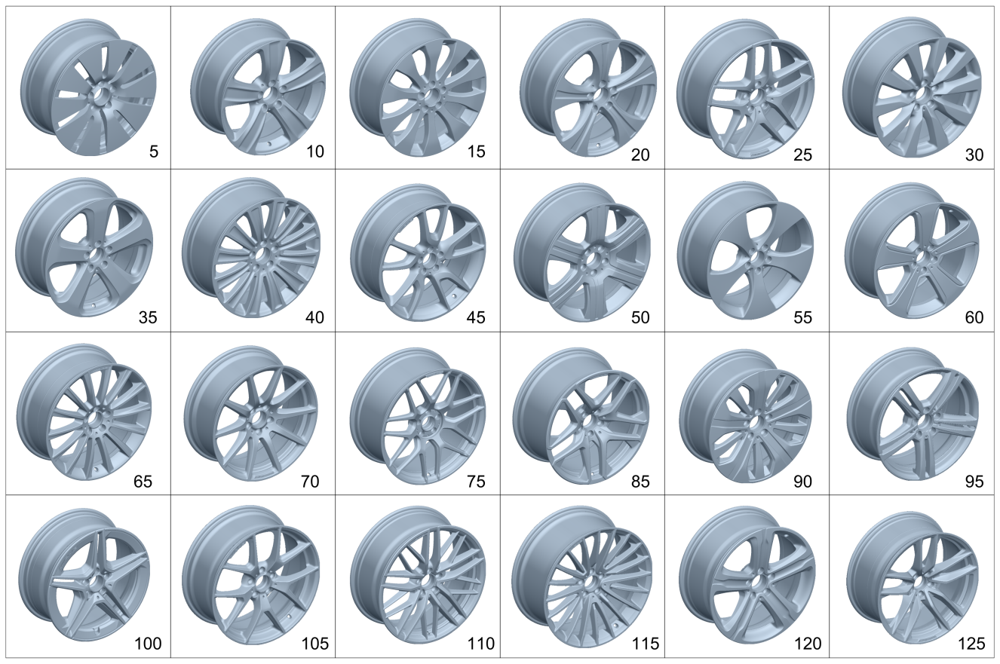

| № | Артикул | Название | Кол. | Примечание | Ограничение |
|---|---|---|---|---|---|
| 5 | A 253 401 14 00 | Дисковое колесо | 2 | Передний мост; 8J X 18 H2 ET 38 [002869] СОБЛЮДАТЬ РУКОВОДСТВО ПО ВЫПОЛНЕНИЮ РАБОТ В WIS-NET#GF40.10-P-0804B# | R41 |
| 5 | A 253 401 14 00 | Дисковое колесо | 2 | Задний мост; 8J X 18 H2 ET 38 [002869] СОБЛЮДАТЬ РУКОВОДСТВО ПО ВЫПОЛНЕНИЮ РАБОТ В WIS-NET#GF40.10-P-0804B# | R41 |
| 10 | A 253 401 21 00 | Дисковое колесо | 2 | Передний мост; 8J X 18 H2 ET 38 [002869] СОБЛЮДАТЬ РУКОВОДСТВО ПО ВЫПОЛНЕНИЮ РАБОТ В WIS-NET#GF40.10-P-0804B# | 82R |
| 10 | A 253 401 21 00 | Дисковое колесо | 2 | Задний мост; 8J X 18 H2 ET 38 [002869] СОБЛЮДАТЬ РУКОВОДСТВО ПО ВЫПОЛНЕНИЮ РАБОТ В WIS-NET#GF40.10-P-0804B# | 82R |
| 10 | A 253 401 21 00 | Дисковое колесо | 4 | Передний и задний мост; 8J X 18 H2 ET 38 [002869] СОБЛЮДАТЬ РУКОВОДСТВО ПО ВЫПОЛНЕНИЮ РАБОТ В WIS-NET#GF40.10-P-0804B# | 2R8 |
| 15 | A 253 401 22 00 | Дисковое колесо | 2 | Передний мост; 8J X 19 H2 ET 38 [002869] СОБЛЮДАТЬ РУКОВОДСТВО ПО ВЫПОЛНЕНИЮ РАБОТ В WIS-NET#GF40.10-P-0804B# | 27R |
| 15 | A 253 401 22 00 | Дисковое колесо | 2 | Задний мост; 8J X 19 H2 ET 38 [002869] СОБЛЮДАТЬ РУКОВОДСТВО ПО ВЫПОЛНЕНИЮ РАБОТ В WIS-NET#GF40.10-P-0804B# | 27R |
| 20 | A 253 401 08 00 | Дисковое колесо | 2 | Передний мост; 8J X 18 H2 ET 38 [002869] СОБЛЮДАТЬ РУКОВОДСТВО ПО ВЫПОЛНЕНИЮ РАБОТ В WIS-NET#GF40.10-P-0804B# | R96 |
| 20 | A 253 401 08 00 | Дисковое колесо | 2 | Задний мост; 8J X 18 H2 ET 38 [002869] СОБЛЮДАТЬ РУКОВОДСТВО ПО ВЫПОЛНЕНИЮ РАБОТ В WIS-NET#GF40.10-P-0804B# | R96 |
| 20 | A 253 401 08 00 | Дисковое колесо | 4 | Передний и задний мост; 8J X 18 H2 ET 38 [002869] СОБЛЮДАТЬ РУКОВОДСТВО ПО ВЫПОЛНЕНИЮ РАБОТ В WIS-NET#GF40.10-P-0804B# | 4R7 |
| 25 | A 253 401 18 00 | Колесо со спицами | 2 | Передний мост; 8J X 19 H2 ET 38 [002869] СОБЛЮДАТЬ РУКОВОДСТВО ПО ВЫПОЛНЕНИЮ РАБОТ В WIS-NET#GF40.10-P-0804B# | 99R/RTB/638/RTA |
| 25 | A 253 401 18 00 | Колесо со спицами | 2 | Передний мост; 8J X 19 H2 ET 38 [002869] СОБЛЮДАТЬ РУКОВОДСТВО ПО ВЫПОЛНЕНИЮ РАБОТ В WIS-NET#GF40.10-P-0804B# | (638/RTA)+(498/821) |
| 25 | A 253 401 18 00 | Колесо со спицами | 2 | Задний мост; 8J X 19 H2 ET 38 [002869] СОБЛЮДАТЬ РУКОВОДСТВО ПО ВЫПОЛНЕНИЮ РАБОТ В WIS-NET#GF40.10-P-0804B# | 99R |
| 25 | A 253 401 18 00 | Колесо со спицами | 2 | Задний мост; 8J X 19 H2 ET 38 [002869] СОБЛЮДАТЬ РУКОВОДСТВО ПО ВЫПОЛНЕНИЮ РАБОТ В WIS-NET#GF40.10-P-0804B# | 99R/638 |
| 25 | A 253 401 33 00 | Колесо со спицами (SPOKE WHEEL) | 2 | Задний мост; 8J X 19 H2 ET 38 [002869] СОБЛЮДАТЬ РУКОВОДСТВО ПО ВЫПОЛНЕНИЮ РАБОТ В WIS-NET#GF40.10-P-0804B# | 638 |
| 25 | A 253 401 18 00 | Колесо со спицами | 2 | Задний мост; 8J X 19 H2 ET 38 [002869] СОБЛЮДАТЬ РУКОВОДСТВО ПО ВЫПОЛНЕНИЮ РАБОТ В WIS-NET#GF40.10-P-0804B# | 638+(498/821) |
| 25 | A 253 401 31 00 | Колесо со спицами | 2 | Задний мост; 9J X 19 H2 ET 20 [002869] СОБЛЮДАТЬ РУКОВОДСТВО ПО ВЫПОЛНЕНИЮ РАБОТ В WIS-NET#GF40.10-P-0804B# | RTA/RTB |
| 30 | A 253 401 09 00 | Дисковое колесо | 2 | Передний мост; 8J X 19 H2 ET 38 [002869] СОБЛЮДАТЬ РУКОВОДСТВО ПО ВЫПОЛНЕНИЮ РАБОТ В WIS-NET#GF40.10-P-0804B# | R26/R58 |
| 30 | A 253 401 23 00 | Дисковое колесо | 2 | Передний мост; 8,5J X 20 H2 ET 40 [002869] СОБЛЮДАТЬ РУКОВОДСТВО ПО ВЫПОЛНЕНИЮ РАБОТ В WIS-NET#GF40.10-P-0804B# | R33 |
| 30 | A 253 401 09 00 | Дисковое колесо | 2 | Задний мост; 8J X 19 H2 ET 38 [002869] СОБЛЮДАТЬ РУКОВОДСТВО ПО ВЫПОЛНЕНИЮ РАБОТ В WIS-NET#GF40.10-P-0804B# | R26/R58 |
| 30 | A 253 401 23 00 | Дисковое колесо | 2 | Задний мост; 8,5J X 20 H2 ET 40 [002869] СОБЛЮДАТЬ РУКОВОДСТВО ПО ВЫПОЛНЕНИЮ РАБОТ В WIS-NET#GF40.10-P-0804B# | R33 |
| 30 | A 253 401 09 00 | Дисковое колесо | 4 | Передний и задний мост; 8J X 19 H2 ET 38 [002869] СОБЛЮДАТЬ РУКОВОДСТВО ПО ВЫПОЛНЕНИЮ РАБОТ В WIS-NET#GF40.10-P-0804B# | 3R6 |
| 30 | A 253 401 09 00 | Дисковое колесо | 4 | Передний и задний мост; 8J X 19 H2 ET 38 [002869] СОБЛЮДАТЬ РУКОВОДСТВО ПО ВЫПОЛНЕНИЮ РАБОТ В WIS-NET#GF40.10-P-0804B# | 5R2 |
| 35 | A 253 401 10 00 | Дисковое колесо | 2 | Передний мост; 8J X 19 H2 ET 38 [002869] СОБЛЮДАТЬ РУКОВОДСТВО ПО ВЫПОЛНЕНИЮ РАБОТ В WIS-NET#GF40.10-P-0804B# | 48R/R39 |
| 35 | A 253 401 10 00 | Дисковое колесо | 2 | Передний мост; 8J X 19 H2 ET 38 [002869] СОБЛЮДАТЬ РУКОВОДСТВО ПО ВЫПОЛНЕНИЮ РАБОТ В WIS-NET#GF40.10-P-0804B# | 48R |
| 35 | A 253 401 10 00 | Дисковое колесо | 2 | Задний мост; 8J X 19 H2 ET 38 [002869] СОБЛЮДАТЬ РУКОВОДСТВО ПО ВЫПОЛНЕНИЮ РАБОТ В WIS-NET#GF40.10-P-0804B# | 48R/R39 |
| 35 | A 253 401 10 00 | Дисковое колесо | 2 | Задний мост; 8J X 19 H2 ET 38 [002869] СОБЛЮДАТЬ РУКОВОДСТВО ПО ВЫПОЛНЕНИЮ РАБОТ В WIS-NET#GF40.10-P-0804B# | 48R |
| 35 | A 253 401 10 00 | Дисковое колесо | 4 | Передний и задний мост; 8J X 19 H2 ET 38 [-] Ознакомиться с инструкцией по выполнению работ в WIS-NET#GF40.10-P-0804B# | 4R2 |
| 40 | A 253 401 11 00 | Дисковое колесо | 2 | Передний мост; 8J X 19 H2 ET 38 [002869] СОБЛЮДАТЬ РУКОВОДСТВО ПО ВЫПОЛНЕНИЮ РАБОТ В WIS-NET#GF40.10-P-0804B# | 75R |
| 40 | A 253 401 11 00 | Дисковое колесо | 2 | Задний мост; 8J X 19 H2 ET 38 [002869] СОБЛЮДАТЬ РУКОВОДСТВО ПО ВЫПОЛНЕНИЮ РАБОТ В WIS-NET#GF40.10-P-0804B# | 75R |
| 45 | A 253 401 20 00 | Колесо со спицами | 2 | Передний мост; 8,5J X 21 H2 ET 40 [002869] СОБЛЮДАТЬ РУКОВОДСТВО ПО ВЫПОЛНЕНИЮ РАБОТ В WIS-NET#GF40.10-P-0804B# | 650/684 |
| 45 | A 253 401 28 00 | Колесо со спицами | 2 | Задний мост; 9,5J X 21 H2 ET 22 [002869] СОБЛЮДАТЬ РУКОВОДСТВО ПО ВЫПОЛНЕНИЮ РАБОТ В WIS-NET#GF40.10-P-0804B# | 650/684 |
| 50 | A 253 401 16 00 | Дисковое колесо | 2 | Передний мост; 8J X 19 H2 ET 38 [002869] СОБЛЮДАТЬ РУКОВОДСТВО ПО ВЫПОЛНЕНИЮ РАБОТ В WIS-NET#GF40.10-P-0804B# | R18 |
| 50 | A 253 401 16 00 | Дисковое колесо | 2 | Задний мост; 8J X 19 H2 ET 38 [002869] СОБЛЮДАТЬ РУКОВОДСТВО ПО ВЫПОЛНЕНИЮ РАБОТ В WIS-NET#GF40.10-P-0804B# | R18 |
| 55 | A 253 401 13 00 | Дисковое колесо | 2 | Передний мост; 8,5J X 20 H2 ET 40 [002869] СОБЛЮДАТЬ РУКОВОДСТВО ПО ВЫПОЛНЕНИЮ РАБОТ В WIS-NET#GF40.10-P-0804B# | R61 |
| 55 | A 253 401 13 00 | Дисковое колесо | 2 | Задний мост; 8,5J X 20 H2 ET 40 [002869] СОБЛЮДАТЬ РУКОВОДСТВО ПО ВЫПОЛНЕНИЮ РАБОТ В WIS-NET#GF40.10-P-0804B# | R61 |
| 60 | A 253 401 17 00 | Дисковое колесо | 2 | Передний мост; 8,5J X 20 H2 ET 40 [002869] СОБЛЮДАТЬ РУКОВОДСТВО ПО ВЫПОЛНЕНИЮ РАБОТ В WIS-NET#GF40.10-P-0804B# | 29R |
| 60 | A 253 401 17 00 | Дисковое колесо | 2 | Задний мост; 8,5J X 20 H2 ET 40 [002869] СОБЛЮДАТЬ РУКОВОДСТВО ПО ВЫПОЛНЕНИЮ РАБОТ В WIS-NET#GF40.10-P-0804B# | 29R |
| 65 | A 253 401 19 00 | Колесо со спицами | 2 | Передний мост; 8,5J X 20 H2 ET 40 [002869] СОБЛЮДАТЬ РУКОВОДСТВО ПО ВЫПОЛНЕНИЮ РАБОТ В WIS-NET#GF40.10-P-0804B# | 688/698/92R/93R |
| 65 | A 253 401 19 00 | Колесо со спицами | 2 | Задний мост; 8,5J X 20 H2 ET 40 [002869] СОБЛЮДАТЬ РУКОВОДСТВО ПО ВЫПОЛНЕНИЮ РАБОТ В WIS-NET#GF40.10-P-0804B# | 688/698 |
| 65 | A 253 401 27 00 | Колесо со спицами | 2 | Задний мост; 9,5J X 20 H2 ET 22 [002869] СОБЛЮДАТЬ РУКОВОДСТВО ПО ВЫПОЛНЕНИЮ РАБОТ В WIS-NET#GF40.10-P-0804B# | 92R/93R |
| 65 | A 253 401 19 00 | Колесо со спицами | 2 | Передний мост; 8,5J X 20 H2 ET 40 [002869] СОБЛЮДАТЬ РУКОВОДСТВО ПО ВЫПОЛНЕНИЮ РАБОТ В WIS-NET#GF40.10-P-0804B# | 8R8 |
| 65 | A 253 401 27 00 | Колесо со спицами | 2 | Задний мост; 9,5J X 20 H2 ET 22 [002869] СОБЛЮДАТЬ РУКОВОДСТВО ПО ВЫПОЛНЕНИЮ РАБОТ В WIS-NET#GF40.10-P-0804B# | 8R8 |
| 70 | A 253 401 34 00 | Колесо со спицами | 2 | Передний мост; 8J X 19 H2 ET 19 [002869] СОБЛЮДАТЬ РУКОВОДСТВО ПО ВЫПОЛНЕНИЮ РАБОТ В WIS-NET#GF40.10-P-0804B# | RVA |
| 70 | A 253 401 35 00 | Колесо со спицами | 2 | Задний мост; 9J X 19 H2 ET 18 [002869] СОБЛЮДАТЬ РУКОВОДСТВО ПО ВЫПОЛНЕНИЮ РАБОТ В WIS-NET#GF40.10-P-0804B# | RVA |
| 75 | A 253 401 40 00 | Колесо со спицами | 2 | Передний мост; 9,5J X 21 H2 ET 30 [002869] СОБЛЮДАТЬ РУКОВОДСТВО ПО ВЫПОЛНЕНИЮ РАБОТ В WIS-NET#GF40.10-P-0804B# | RWD/RWE/RWG |
| 75 | A 253 401 40 00 | Колесо со спицами | 2 | Передний мост; 9,5J X 21 H2 ET 30 [002869] СОБЛЮДАТЬ РУКОВОДСТВО ПО ВЫПОЛНЕНИЮ РАБОТ В WIS-NET#GF40.10-P-0804B# | RWD/RWE |
| 75 | A 253 401 40 00 | Колесо со спицами | 2 | Передний мост; 9,5J X 21 H2 ET 30 [002869] СОБЛЮДАТЬ РУКОВОДСТВО ПО ВЫПОЛНЕНИЮ РАБОТ В WIS-NET#GF40.10-P-0804B# | RWE |
| 75 | A 253 401 41 00 | Колесо со спицами | 2 | Задний мост; 10J X 21 H2 ET 28 [002869] СОБЛЮДАТЬ РУКОВОДСТВО ПО ВЫПОЛНЕНИЮ РАБОТ В WIS-NET#GF40.10-P-0804B# | RWD/RWE/RWG |
| 75 | A 253 401 41 00 | Колесо со спицами | 2 | Задний мост; 10J X 21 H2 ET 28 [002869] СОБЛЮДАТЬ РУКОВОДСТВО ПО ВЫПОЛНЕНИЮ РАБОТ В WIS-NET#GF40.10-P-0804B# | RWD/RWE |
| 75 | A 253 401 41 00 | Колесо со спицами | 2 | Задний мост; 10J X 21 H2 ET 28 [002869] СОБЛЮДАТЬ РУКОВОДСТВО ПО ВЫПОЛНЕНИЮ РАБОТ В WIS-NET#GF40.10-P-0804B# | RWE |
| 85 | A 253 401 36 00 | Колесо со спицами | 2 | Передний мост; 9,5J X 20 H2 ET 30 [002869] СОБЛЮДАТЬ РУКОВОДСТВО ПО ВЫПОЛНЕНИЮ РАБОТ В WIS-NET#GF40.10-P-0804B# | RZS/RZT |
| 85 | A 253 401 37 00 | Колесо со спицами | 2 | Задний мост; 10J X 20 H2 ET 28 [002869] СОБЛЮДАТЬ РУКОВОДСТВО ПО ВЫПОЛНЕНИЮ РАБОТ В WIS-NET#GF40.10-P-0804B# | RZS/RZT |
| 85 | A 253 401 36 00 | Колесо со спицами | 2 | Передний мост; 9,5J X 20 H2 ET 30 [002869] СОБЛЮДАТЬ РУКОВОДСТВО ПО ВЫПОЛНЕНИЮ РАБОТ В WIS-NET#GF40.10-P-0804B# | 8R3 |
| 85 | A 253 401 37 00 | Колесо со спицами | 2 | Задний мост; 10J X 20 H2 ET 28 [002869] СОБЛЮДАТЬ РУКОВОДСТВО ПО ВЫПОЛНЕНИЮ РАБОТ В WIS-NET#GF40.10-P-0804B# | 8R3 |
| 90 | A 253 401 46 00 | Дисковое колесо | 2 | Передний мост; 8J X 18 H2 ET 38 [002869] СОБЛЮДАТЬ РУКОВОДСТВО ПО ВЫПОЛНЕНИЮ РАБОТ В WIS-NET#GF40.10-P-0804B# | 64R |
| 90 | A 253 401 49 00 | Дисковое колесо | 2 | Передний мост; 8J X 19 H2 ET 38 [002869] СОБЛЮДАТЬ РУКОВОДСТВО ПО ВЫПОЛНЕНИЮ РАБОТ В WIS-NET#GF40.10-P-0804B# | 15R |
| 90 | A 253 401 46 00 | Дисковое колесо | 2 | Задний мост; 8J X 18 H2 ET 38 [002869] СОБЛЮДАТЬ РУКОВОДСТВО ПО ВЫПОЛНЕНИЮ РАБОТ В WIS-NET#GF40.10-P-0804B# | 64R |
| 90 | A 253 401 49 00 | Дисковое колесо | 2 | Задний мост; 8J X 19 H2 ET 38 [002869] СОБЛЮДАТЬ РУКОВОДСТВО ПО ВЫПОЛНЕНИЮ РАБОТ В WIS-NET#GF40.10-P-0804B# | 15R |
| 95 | A 253 401 45 00 | Дисковое колесо (DISK WHEEL) | 2 | Передний мост; 8J X 18 H2 ET 38 [002869] СОБЛЮДАТЬ РУКОВОДСТВО ПО ВЫПОЛНЕНИЮ РАБОТ В WIS-NET#GF40.10-P-0804B# | 97R |
| 95 | A 253 401 51 00 | Дисковое колесо | 2 | Передний мост; 8,5J X 20 H2 ET 40 [002869] СОБЛЮДАТЬ РУКОВОДСТВО ПО ВЫПОЛНЕНИЮ РАБОТ В WIS-NET#GF40.10-P-0804B# | 30R |
| 95 | A 253 401 45 00 | Дисковое колесо (DISK WHEEL) | 2 | Задний мост; 8J X 18 H2 ET 38 [002869] СОБЛЮДАТЬ РУКОВОДСТВО ПО ВЫПОЛНЕНИЮ РАБОТ В WIS-NET#GF40.10-P-0804B# | 97R |
| 95 | A 253 401 51 00 | Дисковое колесо | 2 | Задний мост; 8,5J X 20 H2 ET 40 [002869] СОБЛЮДАТЬ РУКОВОДСТВО ПО ВЫПОЛНЕНИЮ РАБОТ В WIS-NET#GF40.10-P-0804B# | 30R |
| 95 | A 253 401 45 00 | Дисковое колесо (DISK WHEEL) | 4 | Передний и задний мост; 8J X 18 H2 ET 38 [-] Ознакомиться с инструкцией по выполнению работ в WIS-NET#GF40.10-P-0804B# | 5R1 |
| 100 | A 253 401 53 00 | Колесо со спицами | 2 | Передний мост; 8J X 19 H2 ET 38 [002869] СОБЛЮДАТЬ РУКОВОДСТВО ПО ВЫПОЛНЕНИЮ РАБОТ В WIS-NET#GF40.10-P-0804B# | RTF/RTG/RZF/RZG |
| 100 | A 253 401 53 00 | Колесо со спицами | 2 | Задний мост; 8J X 19 H2 ET 38 [002869] СОБЛЮДАТЬ РУКОВОДСТВО ПО ВЫПОЛНЕНИЮ РАБОТ В WIS-NET#GF40.10-P-0804B# | RTF/RTG |
| 100 | A 253 401 54 00 | Колесо со спицами | 2 | Задний мост; 9J X 19 H2 ET 20 [002869] СОБЛЮДАТЬ РУКОВОДСТВО ПО ВЫПОЛНЕНИЮ РАБОТ В WIS-NET#GF40.10-P-0804B# | RZF/RZG |
| 105 | A 253 401 55 00 | Колесо со спицами | 2 | Передний мост; 8,5J X 20 H2 ET 40 [002869] СОБЛЮДАТЬ РУКОВОДСТВО ПО ВЫПОЛНЕНИЮ РАБОТ В WIS-NET#GF40.10-P-0804B# | RTW/RTX/RZX/RZY |
| 105 | A 253 401 55 00 | Колесо со спицами | 2 | Передний мост; 8,5J X 20 H2 ET 40 [002869] СОБЛЮДАТЬ РУКОВОДСТВО ПО ВЫПОЛНЕНИЮ РАБОТ В WIS-NET#GF40.10-P-0804B# | RTW/RTX/RZX/RZY/RTM |
| 105 | A 253 401 55 00 | Колесо со спицами | 2 | Задний мост; 8,5J X 20 H2 ET 40 [002869] СОБЛЮДАТЬ РУКОВОДСТВО ПО ВЫПОЛНЕНИЮ РАБОТ В WIS-NET#GF40.10-P-0804B# | RTW/RTX |
| 105 | A 253 401 56 00 | Колесо со спицами | 2 | Задний мост; 9,5J X 20 H2 ET 22 [002869] СОБЛЮДАТЬ РУКОВОДСТВО ПО ВЫПОЛНЕНИЮ РАБОТ В WIS-NET#GF40.10-P-0804B# | RZX/RZY |
| 105 | A 253 401 56 00 | Колесо со спицами | 2 | Задний мост; 9,5J X 20 H2 ET 22 [002869] СОБЛЮДАТЬ РУКОВОДСТВО ПО ВЫПОЛНЕНИЮ РАБОТ В WIS-NET#GF40.10-P-0804B# | RZX/RZY/RTM |
| 105 | A 253 401 55 00 | Колесо со спицами | 2 | Передний мост; 8,5J X 20 H2 ET 40 [002869] СОБЛЮДАТЬ РУКОВОДСТВО ПО ВЫПОЛНЕНИЮ РАБОТ В WIS-NET#GF40.10-P-0804B# | 8R0 |
| 105 | A 253 401 56 00 | Колесо со спицами | 2 | Задний мост; 9,5J X 20 H2 ET 22 [002869] СОБЛЮДАТЬ РУКОВОДСТВО ПО ВЫПОЛНЕНИЮ РАБОТ В WIS-NET#GF40.10-P-0804B# | 8R0 |
| 110 | A 253 401 57 00 | Колесо со спицами | 2 | Передний мост; 8,5J X 21 H2 ET 40 [002869] СОБЛЮДАТЬ РУКОВОДСТВО ПО ВЫПОЛНЕНИЮ РАБОТ В WIS-NET#GF40.10-P-0804B# | RWM/RWN |
| 110 | A 253 401 58 00 | Колесо со спицами | 2 | Задний мост; 9,5J X 21 H2 ET 22 [002869] СОБЛЮДАТЬ РУКОВОДСТВО ПО ВЫПОЛНЕНИЮ РАБОТ В WIS-NET#GF40.10-P-0804B# | RWM/RWN |
| 115 | A 253 401 59 00 | Колесо со спицами | 2 | Передний мост; 9,5J X 21 H2 ET 30 [002869] СОБЛЮДАТЬ РУКОВОДСТВО ПО ВЫПОЛНЕНИЮ РАБОТ В WIS-NET#GF40.10-P-0804B# | RWK/RWL |
| 115 | A 253 401 58 00 | Колесо со спицами | 2 | Задний мост; 9,5J X 21 H2 ET 22 [002869] СОБЛЮДАТЬ РУКОВОДСТВО ПО ВЫПОЛНЕНИЮ РАБОТ В WIS-NET#GF40.10-P-0804B# | RWM/RWN |
| 115 | A 253 401 60 00 | Колесо со спицами | 2 | Задний мост; 10J X 21 H2 ET 28 [002869] СОБЛЮДАТЬ РУКОВОДСТВО ПО ВЫПОЛНЕНИЮ РАБОТ В WIS-NET#GF40.10-P-0804B# | RWK/RWL |
| 120 | A 253 401 07 00 | Дисковое колесо | 2 | Передний мост; 8J X 18 H2 ET 38 [002869] СОБЛЮДАТЬ РУКОВОДСТВО ПО ВЫПОЛНЕНИЮ РАБОТ В WIS-NET#GF40.10-P-0804B# | R31 |
| 120 | A 253 401 07 00 | Дисковое колесо | 2 | Задний мост; 8J X 18 H2 ET 38 [002869] СОБЛЮДАТЬ РУКОВОДСТВО ПО ВЫПОЛНЕНИЮ РАБОТ В WIS-NET#GF40.10-P-0804B# | R31 |
| 125 | A 253 401 38 00 | Колесо со спицами | 2 | Передний мост; 9,5J X 21 H2 ET 30 [002869] СОБЛЮДАТЬ РУКОВОДСТВО ПО ВЫПОЛНЕНИЮ РАБОТ В WIS-NET#GF40.10-P-0804B# | RWA/RWB |
| 125 | A 253 401 39 00 | Колесо со спицами | 2 | Задний мост; 10J X 21 H2 ET 28 [002869] СОБЛЮДАТЬ РУКОВОДСТВО ПО ВЫПОЛНЕНИЮ РАБОТ В WIS-NET#GF40.10-P-0804B# | RWA/RWB |
| 400 | A 253 400 03 00 | Колесо (WHEEL) | 1 | Запасное колесо; 4,5B X19 H2 \+ T155/80 R19 114M [402] БОЛЬШЕ НЕ ПОСТАВЛЯЕТСЯ | E76 |
| 400 | A 253 400 03 00 | Колесо (WHEEL) | 1 | Запасное колесо; 4,5B X19 H2 \+ T155/80 R19 114M [402] БОЛЬШЕ НЕ ПОСТАВЛЯЕТСЯ | 690+M008 |
| 400 | A 223 400 00 00 | Колесо (WHEEL) | 1 | Запасное колесо; 4B X 19 H2 \+ T145/80 R19 110M | 690 |
| 400 | A 223 400 00 00 | Колесо (WHEEL) | 1 | Запасное колесо; 4B X 19 H2 \+ T145/80 R19 110M | E76 |
| 400 | A 223 400 00 00 | Колесо (WHEEL) | 1 | Запасное колесо; 4B X 19 H2 \+ T145/80 R19 110M | 672+M008 |
| 400 | A 223 400 00 00 | Колесо (WHEEL) | 1 | Запасное колесо; 4B X 19 H2 \+ T145/80 R19 110M | 672/690 |
| 420 | A 213 400 03 00 | - Дисковое колесо | 1 | Запасное колесо; 4,5B X 19 H2 ET 35 | E76 |
| 420 | A 213 400 03 00 | - Дисковое колесо | 1 | Запасное колесо; 4,5B X 19 H2 ET 35 | 690+M008 |
| 420 | A 223 400 01 00 | - Дисковое колесо (DISK WHEEL) | 1 | Запасное колесо; 4B X 19 H2 ET 3 | 690 |
| 420 | A 223 400 01 00 | - Дисковое колесо (DISK WHEEL) | 1 | Запасное колесо; 4B X 19 H2 ET 3 | E76 |
| 420 | A 223 400 01 00 | - Дисковое колесо (DISK WHEEL) | 1 | Запасное колесо; 4B X 19 H2 ET 3 | 672+M008 |
| 420 | A 223 400 01 00 | - Дисковое колесо (DISK WHEEL) | 1 | Запасное колесо; 4B X 19 H2 ET 3 | (672/690)+802 |
| 420 | A 223 400 01 00 | - Дисковое колесо (DISK WHEEL) | 1 | Запасное колесо; 4B X 19 H2 ET 3 | 672/690 |
| 430 | A 220 580 00 10 | Короб для запчастей (PARTS BOX) | 1 | Для запасного колеса | 690 |
| 430 | A 220 580 00 10 | Короб для запчастей (PARTS BOX) | 1 | Для запасного колеса | E76 |
| 430 | A 220 580 00 10 | Короб для запчастей (PARTS BOX) | 1 | Для запасного колеса | 672+M008 |
| 430 | A 220 580 00 10 | Короб для запчастей (PARTS BOX) | 1 | Для запасного колеса | (690/672)+802 |
| 430 | A 220 580 00 10 | Короб для запчастей (PARTS BOX) | 1 | Для запасного колеса | 672/690 |
| 435 | A 000 990 49 07 | - Винт со сфер. буртиком (SPHERICAL COLLAR SCREW) | 5 | Для запасного колеса; M14X1,5X30,7 | 690 |
| 435 | A 000 990 49 07 | - Винт со сфер. буртиком (SPHERICAL COLLAR SCREW) | 5 | Для запасного колеса; M14X1,5X30,7 | E76 |
| 435 | A 000 990 49 07 | - Винт со сфер. буртиком (SPHERICAL COLLAR SCREW) | 5 | Для запасного колеса; M14X1,5X30,7 | 672+M008 |
| 435 | A 000 990 49 07 | - Винт со сфер. буртиком (SPHERICAL COLLAR SCREW) | 5 | Для запасного колеса; M14X1,5X30,7 | 672/690 |
| 500 | A 171 400 00 25 | Крышка ступицы колеса | 4 | Передний и задний мост | +-RWE |
| 500 | A 222 400 21 00 | Колпак колеса | 4 | Передний и задний мост | +-RWE |
| 500 | A 201 401 01 25 | Колпак колеса | 4 | Передний и задний мост | RVA/RZS/RZT/RWA/RWB |
| 500 | A 220 400 01 25 | Крышка ступицы колеса | 4 | Передний и задний мост | RVA/RZS/RZT/RWA/RWB |
| 500 | A 220 400 01 25 | Крышка ступицы колеса | 4 | Передний и задний мост | RVA/RZS/RZT |
| 500 | A 000 400 27 00 | Колпак колеса (HUB CAP) | 4 | Передний и задний мост | RWM/RWN/RWK/RWL/(RZF/RZG/RZX/RZY)+M016 |
| 500 | A 171 400 00 25 | Крышка ступицы колеса | 4 | Передний и задний мост | 638/650/688/92R/RTA |
| 500 | A 171 400 00 25 | Крышка ступицы колеса | 4 | Передний и задний мост | 638/688/92R/RTA |
| 500 | A 171 400 01 25 | Крышка ступицы колеса | 4 | Передний и задний мост | 684/698/93R/99R/RTB |
| 500 | A 171 400 01 25 | Крышка ступицы колеса | 4 | Передний и задний мост | 698/93R/99R/RTB |
| 500 | A 171 400 01 25 | Крышка ступицы колеса | 4 | Передний и задний мост | 698/93R/99R/RTB/(698/93R/99R/RTB)+807+057+(101/102) |
| 500 | A 171 400 01 25 | Крышка ступицы колеса | 4 | Передний и задний мост | 698/93R/99R/RTB |
| 500 | A 222 400 21 00 | Колпак колеса | 4 | Передний и задний мост | (698/93R/99R/RTB)+807+057 |
| 500 | A 222 400 21 00 | Колпак колеса | 4 | Передний и задний мост | 698/93R/99R/RTB |
| 500 | A 000 400 21 00 | Колпак колеса (WHEEL TRIM) | 1 | Комплект деталей для переднего и заднего моста | 652+8R8 |
| 500 | A 000 400 21 00 | Колпак колеса (WHEEL TRIM) | 1 | Комплект деталей для переднего и заднего моста | 651+8R3+(93R/RVA/RZS) |
| 500 | A 000 400 27 00 | Колпак колеса (HUB CAP) | 4 | Передний и задний мост | 651+8R3+(RWM/RWN/RWK/RWL/(RZG/RZX/RZY)+M016) |
| 500 | A 000 400 55 00 | Колпак колеса (HUB CAP) | 1 | Комплект деталей для переднего и заднего моста | 652+8R0 |
| 500 | A 000 400 55 00 | Колпак колеса (HUB CAP) | 1 | Комплект деталей для переднего и заднего моста | 651+8R0+(RZF/RZG/RWM/RWN/RZX/RZY) |
| 500 | A 220 400 01 25 | Крышка ступицы колеса | 4 | Передний и задний мост | 651+8R3 |
| 500 | A 220 400 01 25 | Крышка ступицы колеса | 4 | Передний и задний мост | 652+8R3+(93R/RVA/RZS/RZT) |
| 500 | A 000 400 27 00 | Колпак колеса (HUB CAP) | 4 | Передний и задний мост | 652+8R3+(RZG/RZX/RZY/RVM/RVN/RWK/RWL) |
| 500 | A 000 400 27 00 | Колпак колеса (HUB CAP) | 4 | Передний и задний мост | 651+8R0 |
| 500 | A 000 400 27 00 | Колпак колеса (HUB CAP) | 4 | Передний и задний мост | 652+8R0+(RZF/RZG/RWM/RWN/RZX/RZY) |
| 500 | A 171 400 00 25 | Крышка ступицы колеса | 4 | Передний и задний мост | 651+(3R6/4R7/4R9) |
| 500 | A 222 400 21 00 | Колпак колеса | 4 | Передний и задний мост | 651+(2R8/3R6/4R6/4R9/5R2) |
| 500 | A 222 400 21 00 | Колпак колеса | 4 | Передний и задний мост | 651+(2R8/3R6/4R2/4R6/4R9/5R1/5R2) |
| 500 | A 222 400 21 00 | Колпак колеса | 4 | Передний и задний мост | 651+(3R6/4R2/4R6/4R9/5R1) |
| 500 | A 171 400 01 25 | Крышка ступицы колеса | 4 | Передний и задний мост | 651+8R8 |
| 500 | A 222 400 21 00 | Колпак колеса | 4 | Передний и задний мост | 651+8R8 |
| 510 | A 000 990 76 07 | Винт со сфер. буртиком (SPHERICAL COLLAR SCREW) | 20 | Передний и задний мост; M14X1,5X48,5 | -M177 |
| 510 | A 000 990 18 07 | Винт со сфер. буртиком (SPHERICAL COLLAR SCREW) | 20 | Передний и задний мост M14X1,5X48,5 | -M177 |
| 510 | A 000 990 54 07 | Винт со сфер. буртиком (SPHERICAL COLLAR SCREW) | 20 | Передний и задний мост; M14X1,5X48,5 | RVA/RZS/RZT/RWA/RWB/RWD/RWE/RWG |
| 520 | A 000 400 11 00 | Колпак колеса | 4 | Передний и задний мост | 652+8R3+(RWD/RWE/RWG) |
| 525 | A 000 400 22 00 | Колпак колеса | 1 | Комплект деталей для переднего и заднего моста | RWD/RWE/RWG |
| 525 | A 000 400 22 00 | Колпак колеса | 1 | Комплект деталей для переднего и заднего моста | RWD/RWE |
| 525 | A 000 400 22 00 | Колпак колеса | 1 | Комплект деталей для переднего и заднего моста | RWE |
| 525 | A 000 400 22 00 | Колпак колеса | 1 | Комплект деталей для переднего и заднего моста | 651+8R3+(RWD/RWE) |
| 525 | A 000 400 22 00 | Колпак колеса | 1 | Комплект деталей для переднего и заднего моста | 651+8R3+RWE |
| 525 | A 000 400 22 00 | Колпак колеса | 1 | Комплект деталей для переднего и заднего моста | 652+8R3+(RWD/RWE) |
| 525 | A 000 400 22 00 | Колпак колеса | 1 | Комплект деталей для переднего и заднего моста | 652+8R3+RWE |
| 530 | A 000 905 00 30 | Датчик давл. воздуха шины (TIRE PRESSURE SENSOR) | 2 | Система контроля давления в шинах, передний мост [002832] ВНИМАНИЕ: ТАКЖЕ СЛЕДУЕТ ЗАКАЗАТЬ РИФЛЕНУЮ ГАЙКУ | 475 |
| 530 | A 000 905 39 07 | Датчик давл. воздуха шины (TIRE PRESSURE SENSOR) | 2 | Система контроля давления в шинах, передний мост [002832] ВНИМАНИЕ: ТАКЖЕ СЛЕДУЕТ ЗАКАЗАТЬ РИФЛЕНУЮ ГАЙКУ | 475 |
| 530 | A 000 905 39 07 | Датчик давл. воздуха шины (TIRE PRESSURE SENSOR) | 2 | Система контроля давления в шинах, передний мост | 475 |
| 530 | A 000 905 00 30 | Датчик давл. воздуха шины (TIRE PRESSURE SENSOR) | 2 | Система контроля давления в шинах, передний мост | 475 |
| 530 | A 000 905 39 07 | Датчик давл. воздуха шины (TIRE PRESSURE SENSOR) | 2 | Система контроля давления в шинах, передний мост | 475+830 |
| 530 | A 000 905 01 30 | Датчик давл. воздуха шины (TIRE PRESSURE SENSOR) | 2 | Система контроля давления в шинах, передний мост [002832] ВНИМАНИЕ: ТАКЖЕ СЛЕДУЕТ ЗАКАЗАТЬ РИФЛЕНУЮ ГАЙКУ | 475+498 |
| 530 | A 000 905 00 30 | Датчик давл. воздуха шины (TIRE PRESSURE SENSOR) | 2 | Система контроля давления в шинах, задний мост [002832] ВНИМАНИЕ: ТАКЖЕ СЛЕДУЕТ ЗАКАЗАТЬ РИФЛЕНУЮ ГАЙКУ | 475 |
| 530 | A 000 905 39 07 | Датчик давл. воздуха шины (TIRE PRESSURE SENSOR) | 2 | Система контроля давления в шинах, задний мост [002832] ВНИМАНИЕ: ТАКЖЕ СЛЕДУЕТ ЗАКАЗАТЬ РИФЛЕНУЮ ГАЙКУ | 475 |
| 530 | A 000 905 39 07 | Датчик давл. воздуха шины (TIRE PRESSURE SENSOR) | 2 | Система контроля давления в шинах, задний мост | 475 |
| 530 | A 000 905 00 30 | Датчик давл. воздуха шины (TIRE PRESSURE SENSOR) | 2 | Система контроля давления в шинах, задний мост | 475 |
| 530 | A 000 905 39 07 | Датчик давл. воздуха шины (TIRE PRESSURE SENSOR) | 2 | Система контроля давления в шинах, задний мост | 475+830 |
| 530 | A 000 905 01 30 | Датчик давл. воздуха шины (TIRE PRESSURE SENSOR) | 2 | Система контроля давления в шинах, задний мост [002832] ВНИМАНИЕ: ТАКЖЕ СЛЕДУЕТ ЗАКАЗАТЬ РИФЛЕНУЮ ГАЙКУ | 475+498 |
| 530 | A 000 905 39 07 | Датчик давл. воздуха шины (TIRE PRESSURE SENSOR) | 4 | Передний и задний мост | 475+(4R2/4R9/5R1) |
| 530 | A 000 905 00 30 | Датчик давл. воздуха шины (TIRE PRESSURE SENSOR) | 4 | Передний и задний мост | 475+(4R2/4R9/5R1) |
| 530 | A 000 905 39 07 | Датчик давл. воздуха шины (TIRE PRESSURE SENSOR) | 4 | Передний и задний мост [002832] ВНИМАНИЕ: ТАКЖЕ СЛЕДУЕТ ЗАКАЗАТЬ РИФЛЕНУЮ ГАЙКУ | 475+(4R2/4R9/4R6/3R6/5R1) |
| 530 | A 000 905 39 07 | Датчик давл. воздуха шины (TIRE PRESSURE SENSOR) | 4 | Передний и задний мост | 475+(8R3/8R0) |
| 530 | A 000 905 00 30 | Датчик давл. воздуха шины (TIRE PRESSURE SENSOR) | 4 | Передний и задний мост | 475+(8R3/8R0) |
| 535 | A 000 997 91 05 | - Плоское уплотнение (GASKET) | 2 | Уплотнительное кольцо переднего вентиля шины | 475 |
| 535 | A 000 997 91 05 | - Плоское уплотнение (GASKET) | 2 | Уплотнительное кольцо заднего вентиля шины | 475 |
| 540 | A 000 401 06 09 | - Защитный колпачок (PROTECTIVE CAP) | 2 | Передний мост | 475 |
| 540 | A 000 401 06 09 | - Защитный колпачок (PROTECTIVE CAP) | 2 | Задний мост | 475 |
| 550 | A 000 401 59 04 | Гайка вентиля (VALVE NUT) | 2 | Передний мост | 475 |
| 550 | A 000 401 59 04 | Гайка вентиля (VALVE NUT) | 2 | Задний мост | 475 |
| 550 | A 000 401 59 04 | Гайка вентиля (VALVE NUT) | 4 | Передний и задний мост | 475+(4R2/4R9/4R6/3R6/5R1) |
| 570 | A 000 400 02 13 | Вентиль шины (TIRE VALVE) | 2 | Передний мост | -475 |
| 570 | A 000 400 02 13 | Вентиль шины (TIRE VALVE) | 2 | Задний мост | -475 |
| 570 | A 000 400 29 13 | Вентиль шины (TIRE VALVE) | 1 | Запасное колесо | E76 |
| 570 | A 000 400 29 13 | Вентиль шины (TIRE VALVE) | 1 | Запасное колесо | 690+M008 |
| 570 | A 000 400 29 13 | Вентиль шины (TIRE VALVE) | 1 | Запасное колесо | 690 |
| 570 | A 000 400 29 13 | Вентиль шины (TIRE VALVE) | 1 | Запасное колесо | 672+M008 |
| 570 | A 000 400 29 13 | Вентиль шины (TIRE VALVE) | 1 | Запасное колесо | 672/690 |
| 580 | N 007757 008600 | - Колпачок вентиля (VALVE CAP) | 2 | Передний мост | -475 |
| 580 | N 007757 008600 | - Колпачок вентиля (VALVE CAP) | 2 | Задний мост | -475 |
| 600 | A 171 401 01 94 | Балансировочный грузик (BALANCING WEIGHT) | NB | Исполнение с клеевым соединением; 5 GRAMM | |
| 600 | A 171 401 02 94 | Балансировочный грузик (BALANCING WEIGHT) | NB | Исполнение с клеевым соединением; 10 GRAMM | |
| 600 | A 171 401 03 94 | Балансировочный грузик (BALANCING WEIGHT) | NB | Исполнение с клеевым соединением; 15 GRAMM | |
| 600 | A 171 401 04 94 | Балансировочный грузик (BALANCING WEIGHT) | NB | Исполнение с клеевым соединением; 20 GRAMM | |
| 600 | A 171 401 05 94 | Балансировочный грузик (BALANCING WEIGHT) | NB | Исполнение с клеевым соединением; 25 GRAMM | |
| 600 | A 171 401 06 94 | Балансировочный грузик (BALANCING WEIGHT) | NB | Исполнение с клеевым соединением; 30 GRAMM | |
| 600 | A 171 401 07 94 | Балансировочный грузик (BALANCING WEIGHT) | NB | Исполнение с клеевым соединением; 35 GRAMM | |
| 600 | A 171 401 08 94 | Балансировочный грузик (BALANCING WEIGHT) | NB | Исполнение с клеевым соединением; 40 GRAMM | |
| 600 | A 171 401 09 94 | Балансировочный грузик (BALANCING WEIGHT) | NB | Исполнение с клеевым соединением; 45 GRAMM | |
| 600 | A 171 401 10 94 | Балансировочный грузик | NB | Исполнение с клеевым соединением; 50 GRAMM | |
| 600 | A 171 401 11 94 | Балансировочный грузик (BALANCING WEIGHT) | NB | Исполнение с клеевым соединением; 55 GRAMM | |
| 600 | A 171 401 12 94 | Балансировочный грузик (BALANCING WEIGHT) | NB | Исполнение с клеевым соединением; 60 GRAMM | |
| 650 | A 000 905 99 14 | К-т датчика давл. в шине (PARTS KIT, PRS. SENSOR) | 1 | 433MHZ | 475 |
Позиций: 192 · подписано на схемах: 192 · колесо — плавный зум в курсор, перетаскивание — пан, двойной клик — зум, клик по артикулу — скопировать.